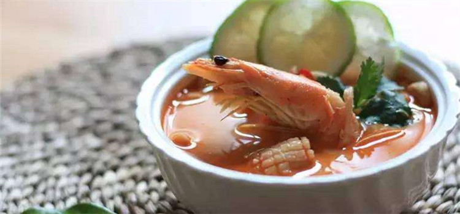
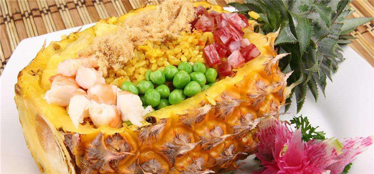

当地美食
#冬阴功汤（Tom Yam Kung）#
冬阴功汤在泰国非常普遍。大小餐馆、普通人家常饮此汤，从而成为泰国菜的代表。这道汤的名字中，“冬阴”是酸辣的意思，“功”是虾的意思，翻译过来其实就是酸辣虾汤。不过冬阴功汤极辣，其中还放有大量咖喱，不过习惯了之后不少人倒是会贪恋上它。

图：冬阴功汤
#泰式菠萝炒饭（Fried Rice with Pineapple）#
泰式菠萝炒饭，运用泰国香米的香气，搭配菠萝以及什锦蔬菜等大火快炒，咸咸酸酸甜甜的口感，才吃一口就会让人食欲大开，撘配腰果一起入口，口感层次丰富，相当值得推荐！尤其把饭装在菠萝里一起上桌，视觉效果奇佳！

图：泰式菠萝炒饭
#泰式炒河粉#
这也可说是泰国菜里的招牌菜，先将河粉用甜酱炒得甜甜咸咸的的，之后在旁边摆上碎花生、辣椒粉、花生粉以及豆芽菜等，要享用之前先把所有的料全部拌匀，再加上几滴柠檬汁.
入口后弹牙的河粉与青脆的豆芽，交错出绝妙的口感，在花生粉的香气中，柠檬汁更将整道菜的鲜甜滋味给缓缓带出，最后出现的才是辣椒粉的劲道。通常这份料理在泰国比较常见，因此大餐厅小馆子里都可以点得到。

图：泰式炒河粉
#青木瓜沙拉#
青木瓜沙拉（Som Tam）是泰国人很喜欢的一道开胃小菜，入口酸、甜，随后以辣椒带出青木瓜的鲜脆口感，搭配生菜与花生颗粒的嚼感，让人一吃就胃口大开。
不过点这道菜时要记得，由于传统的作法都会加上鱼露、虾酱与蒜头，因此在点菜时只要特别注明这些东西不吃就行了。虽然少了虾酱与鱼露的调味，以辣椒取而代之的呛辣口感，却也让清淡的开胃菜点缀出鲜活的灵魂。
图：青木瓜沙拉
#泰式咖喱蟹#
泰式咖喱蟹是泰国的一道名菜。在曼谷，几乎每个餐厅的菜谱上都有这道菜。以前泰国人炒蟹只用芹菜、葱和洋葱，有点像中国式姜葱炒蟹。
据说，一个泰国厨师长工作时偷偷饮醉酒，误把咖喱粉当作胡椒粉放入蟹中，服务生却又匆忙将此时的菜递给了食客，食客吃后觉得味道很特别。数日后，食客再次光顾，要求再次享用此菜，厨师只好将错就错，在炒蟹中继续加入咖喱粉烹制后给食客吃，泰式咖喱蟹就由此流传开来!
图：泰式咖喱蟹
#香蕉煎饼#
这是一款街头巷尾都可以看到的小吃，有点类似中国的煎饼果子，但是味道确实甜的。摊薄的面糊中加入切好的香蕉片，再将面糊折叠成方块状后淋上巧克力酱、炼乳等。吃起来香甜可口，让人欲罢不能。
图：香蕉煎饼
#椰子冰淇淋#
椰子冰淇淋味道浓郁，入口即化，特别是配上炒过的脆花生或者是水煮的甜玉米，不仅提升了椰子冰淇淋的口感，而且还降低了它的甜腻。
椰子冰淇淋通常是用天然的椰子壳作为它的容具（有些卖家会用小的塑料杯装）它的底部都会放上些鲜滑的椰子肉，大家可以试用底下的椰肉蘸着冰欺凌吃，这绝对又是另一种不可割舍的味道。
图：椰子冰淇淋
#芒果糯米饭#
这是泰国经典的甜主食，芒果和糯米饭要一起进嘴才能起最魔幻的化学反应。芒果甜中带酸，可这酸味马上与裹上了泡浸香浓椰浆的泰国香糯米饭的甜味混合了去，美妙得紧，糯米洁白如玉，芒果灿灿如金，大鱼大肉油腻过后，这道主食最为清新爽口。
图：芒果糯米饭
觅食好去处
#乍都乍周末市场Chatuchak Weekend Market#
东南亚地区最大的市场，位于曼谷市郊。市场内有超过9000家商铺，商品种类繁多，服装、手工艺品、花鸟鱼虫，应有尽有。在这里还可以吃到椰子冰激凌、芒果糯米饭、青木瓜沙拉等多种当地小吃。只有周末所有店铺才营业，购物一定要狠狠砍价，同时提防小偷。
图：乍都乍周末市场
地址：Thanon Kamphaeng Phet, Chatuchak, Bangkok
#曼谷河畔夜市Asiatique The Riverfront#
简全亚洲最大夜市，由旧码头仓库改建而成，与传统夜市相比，环境整洁、小资情调更浓。这里美食、手工艺品、服饰应有尽有，店铺按种类划分区域，商品价格较高，记得要砍价。
夜市旁有据说是世界转速最快的摩天轮，坐在上面观赏湄南河夜景，体验极佳。 每天下午5点起，会有接驳船在Saphan Taksin站免费接送游人。
电话 +66-2-1084488
图：曼谷河畔夜市
地址：Wat Phaya Krai, Bang Kho Laem, Bangkok
#巧克力庄园Chocolate Ville#
这个庄园其实和巧克力一点关系都没，只是因为庄园的主人以前是做巧克力盒子发家致富的，后来建了这个巧克力小镇，所以才取名巧克力。
欧洲风格的小镇其实蛮大的，很适合来这里拍照取景凹造型，还伴有小桥流水以及户外的十分具有情调的餐厅，显得十分迷人，尤其是夕阳西下的时候，夜幕降临，华灯初上，更多了几分浪漫和诗情画意。
电话： 0066-8-1921-2016 0066-8-1921-0661
图：巧克力庄园
地址：Soi Nawamin 74, Yak 3-8 Kaset-Nawamin Rd., Klong Kum Subdistrict Bueng Kum District, Bangkok
#唐人街#
唐人街是曼谷西部的一处繁华商业区，有将近200年历史，经营者几乎全是华人华侨。据说曼谷金店的70%分布在唐人街。这里还有出售华文书报的书店报摊，也有潮州戏院、影院等。许多店铺都供奉着福、禄、寿的画像，门上贴着对联。
每年农历春节都有舞狮和舞龙表演。这里的餐馆主打潮汕风味，还有各式广式小吃，如猪脚、卤蛋、鱼丸和炒粉等。大多数小吃摊位晚上才会出摊，如果想吃遍所有的美食，最好夜间前往。
交通：搭乘MRT到Hua Lamphong站，步行即到
开放时间 全天
图：唐人街
地址：Yaowarat, Bangkok
#恰图恰市场Chatuchak Weekend Market#
只在周末开门的恰图恰露天市场盛名远播，是东南亚最大的跳蚤市场，已经成为游客的必到之地。
对于初次前往的游客来说，想要征服足足有10个足球场大小的恰图恰市场几乎是个不能完成的任务。所以时间有限的情况下，一定要找准自己想去的购物区，看到喜爱的东西直接砍价出手。
营业时间：周六、周日10：00开门
交通：可以搭乘轻轨在Mo Chit站，地铁在Chatuchak Park站下.Chatuchak Park是与Mo Chit 站连接的，这个站要步行八分钟才能到达.但在Kampheang Phet站下车，一出站就是JJMarket，即恰图恰市场
图：恰图恰市场
地址：Thanon Kamphaeng Phet, Chatuchak, Bangkok
#拉差达火车夜市#
曼谷是繁华的国际大都市，融合东西方文化、包罗万象，市内河道纵横。地铁站到泰国文化中心站3号出口，伊势丹百货后面，绝对可以逛一个上，一半是小商品衣服裤子鞋子都有，一半是吃的小吃，美丽又好吃价格还不贵，大多数都是本地人在逛。
曼谷在这几个月内多了几个夜市，最广为人知的是Ratchada之上的新Tarad Rodfai火车夜市（历史消息里有哦），但其实除了这个还有一个较远一点的，就是Siam Gypsy Junction。
其实Siam Gypsy Junction 并非新事物，之前它就附属于JJ Green Night Market内但后来因双方出现了一些问题，结果他们就出来自立门户，在找了很多地方之后，结果就找到Bangson这个火车站的旁边，就是在天桥底下开了这个夜市。
这个夜市其实有点像早期的火车夜市，所卖的是很草根的，而所处的地方也是相当草根，因为这里之前是在公路天桥之下，基本上也是一些很草根的泰人住的地方，在小小的河道旁边尽是一些建筑工人和地草根居民住的小屋。
夜市方面就善用了这里的环境，把它变成一条直路、一望无际的夜市。当你落了的士走进这里的时候，可能觉得没什么看，因为左边小贩摆卖，卖的都不太特别。
然后右边就是一个街市，晚上的时候街市都已经休息了，所以看起来都很普通。
但当你越向前行就越发觉更多的有趣店铺，过了街市后面左右两边都有不同的东西卖，左边就是小贩摆的地摊，右边就是一些铺位，这边就是卖一些Vintage古旧家品也有、卖时装的也有、甚至发廊都有。
之前在火车夜市出现了一些很便宜的发廊，但这里更加便宜，150匹就可以剪一个怀旧的美式头，而且一边走可以发现两旁有很多小吃店，跟着你会发现在这里的人所卖的是大多数都是Vintage一些二手的古旧的产品货品。
相对来说现在火车夜市Tarad Rodfai已经和最初不同，已经有一点点变质，最初的Tarad Rodfai火车夜市是以卖很多草根和二手货Vintage为主，但到了现在第二代、第三代就变了一些小贩摆卖的夜市，就失去了一种地道和怀旧的味道，而这个重生的Siam Gypsy Junction 它就是成功地吸纳了那些可能没机会进去Tarad Rodfai的小贩到来。
更有趣的就是它里面的铺位的装修虽然是地道和草根feel，但也很有其味道，有部分就设计到60年代、70年代的怀旧泰国这样，有一些就是很简单的清新感觉也有，在百家争鸣之下的曼谷夜市就更加多元化。
这里的营业时间是周三至周日的晚上大概6点后，而大多的店铺是在周五和周六开铺的，如果平常周三、周四去的话呢就没有这么多卖二手Vintage的小贩开档。
这个夜市在火车旁边，所以在这里会真真正正的看见火车经过，也可以说是一个真正的火车夜市，而这里卖的怀旧、古旧的产品，也很罕有；例如有：泰国版70年代法国电影神奇飞天侠的剧照，也有泰版的幪面超人和咸蛋超人电影的原装海报，这些都是其他地方很难找到的。
如何去：要到这个夜市的话建议乘搭地跌MRT去到Bangsue，这个站再转的士大概10分钟左右就会到。
图：拉差达火车夜市
地址：Ratchada Train Market or Rod Fai Night Market 2, Bangkok
#asiatique滨河夜市#
是一个老旧仓库改造的，在河边，很有特色，有很多小吃和吃饭的地方，从BTS的saphan taksin换渡轮就可以到。
图：asiatique滨河夜市
地址：2194 Charoen Krung Rd, Khwaeng Wat Phraya Krai, Khet Bang Kho Laem, Krung Thep Maha Nakhon 10120, Bangkok
#Huai-Khwang#
Huai-Khwang夜市算是很当地人的夜市，好吃的东西特别多，从Ratchadphisek路口转进去，7-11旁的巷口有一家泰式热炒摊，只要想的出的泰国菜，老板几乎都做的出来，再往前有个书报摊，可以买的到世界日报，对泰国杂志等出版品有兴趣的朋友也可以来这边翻翻找找。
接下来的药房就很有趣，你可以在里面找到五塔标行军散、虎标万金油、白花油、白象油等记忆中熟悉的老牌子药品，名列泰国伴手礼前几名的Counterpain酸痛药膏，在这也是热销商品，而且价钱绝对实惠。
再往夜市里面钻进去，有卖烤肉串的小摊、炸鸡配糯米饭、青木瓜沙拉等等的小摊子，店面则多是卖廉价女性服饰、内衣、鞋子为主，因为这里也是曼谷有名的风化区，很多上班小姐下班后就会在这吃个东西，顺便逛逛街，因此针对上班小姐的需求而开设的店就因应而生。
过了座小桥后是一家泰国海产店，体型硕大的泰国虾、螃蟹等海鲜已排排躺好等待进入客人的嘴里。泰国东北菜在这边也是非常好吃和有名，总是座无虚席，还需要排队。猪脚饭、泰式炒粿条、炸鸡、炸鱼、面摊等，只要你的肚子还有空间，就尽量尝试吧。上次介绍的Noi海鲜馆就在这里，大力推荐。
走到叉路口，往左转进去是一家非常好吃的海南鸡饭、鸭肉面的摊子。再往回走到原先的叉路口，对面就是一大摊的水果摊，五颜六色、新鲜甜美的各式水果整整齐齐的排着，只管论斤买回去，让你吃个够。这里的迷你菠萝非常好吃，而且比thong lor小吃街的便宜哦。
Huai-Khwang夜市其实不过短短的八、九百公尺吧，基本上可买的商品不多，好吃的绝对少不了。也因为Huai-Khwang的便利、物美价廉和热闹，所以在曼谷人心中是非常喜爱的夜市。
交通方式：搭乘曼谷捷运MRT线至Huai Khwang站1号/3号出口，旁边就是huai khwang夜市。
图：Huai-Khwang
地址：Prachasongkroh Road Huai Khwang Intersection, Bangkok
#Sukhumwit Soi 38/thong lor小吃街#
这里再一次介绍一下个人非常喜欢的私家小景点thong lor小吃街，位于Sukumwit路38巷口这边有大概十几家的小摊子和店面组成的小小夜市，由38巷口往内延伸约五、六十公尺。
这里有卖泰式猪脚饭、泰式炒粿条、面摊、海南鸡饭、鸭肉面、青木瓜沙拉、蚵仔煎、新鲜果汁吧等等各式泰国小吃，每一摊的食物都色香味俱全，而且虽然大部分都是摊贩，但整体的环境整洁，让人光看就觉得很安心。
还有一个很重要的原因是，你可以看到喜欢吃的食物就点，然后找其中一家坐定，其他家会把你点的食物送上来，不用这摊吃一坨后又转往其他摊，可以让你一次解决，买单时也可以一家代收，不用再每一家跑去付帐 ，非常方便。
交通方式：搭乘曼谷捷运BTS线至Thong Lo站（E6），4号出口出站。
图： Sukhumwit Soi 38/thong lor小吃街
地址：Sukhumwit Soi 38, Bangkok
#考山路夜市#
考山是曼谷的一条街道，英文名Khao San Road。背包客的聚集地，一条街两旁既是夜市又是食市，越夜越热闹，考山路两边全是酒吧，走在路上都能感觉到很大的有节奏的音乐声。
这些酒吧几乎都有大的液晶电视或者投影电视，酒吧的消费也不贵。一瓶chang啤酒小瓶的大概50B。一些露天酒吧还提供点菜，沙拉，炒饭之类的都有。价格也不贵。
如何去：建议打车，从siam过去打表100铢以内
图：考山路夜市
地址：Bang Lamphu, Phra Nakhon, Bangkok
#Talad Rot Fai Ratchada火车夜市#
这个火车夜市就在地铁站旁，比上个夜市更容易到达，今年1月8日新开的，是第三代火车夜市。进来就人潮汹涌，美食玲琅满目，一边的场地有乐队现场。还没走两步，心情已经高涨。
眼前闪过的一大碗刨冰深深的震撼了我们。他们家主推巧克力、咖啡和草莓3种味道，用料十足。看他们做冰就是一场视觉享受，一大碗才70铢，不少人拿号排队。夜市主要有美食，当地人自己设计的衣服，鞋包，小手工艺品和电子产品。
如何去：MRT Thailand cultural centre站 3号出口，出来向左半分钟，到Esplanade商场前转左进去，沿途有指标。
时间：周四-周日傍晚5pm-晚上1am。
图：Talad Rot Fai Ratchada火车夜市
地址：Esplanade Shop, Phra Nakhon, Bangkok
米其林星级餐厅
#Blue Elephant蓝象餐厅#
Blue Elephant蓝象餐厅是一家全球连锁的泰式料理店，30年前从布鲁塞尔做起，其分店曾获米其林三星的泰式餐厅，后面发展到曼谷，是泰国最有档次最有品味的泰餐厅之一。
该餐厅主打的菜式是泰国宫廷料理，就连泰国皇室成员都专门前来预定。2014到到网卓越奖获得者之一！菜品以西餐融汇泰菜，自然客人也绝大多数是外国游客，黄咖喱煮蟹做得出彩，头盘的鹅肝与炸虾饼很是不错。但甜品不太懂欣赏，汤也有些平庸。价格有点贵，30年纪念餐2200铢/位！
交通： BTS Surasak站出站，往南即是
图：Blue Elephant蓝象餐厅
地址：233 Thanon Sathon Tai, Yannawa Yannawa, Bangkok
#Bo.Lan Restaurant#
亚洲排名No.37的餐厅，并收录进《世界一千零一家必去餐厅》的泰国餐厅之一。
老板兼大厨Dylan和Bo曾经在伦敦首间米奇林泰国菜餐厅nahm工作5年，从大厨身上学到多款早已失传的传统泰菜，于是决定自立门户，钻研更多地道泰国菜式。
不过就我而言，环境满分，服务一流，味道就不是特别有惊喜了。午市的餐单感觉就是一个贵价版的SET LUNCH……
图：Bo.Lan Restaurant
地址：42 Soi Pichai-rongnarong-songkram, Sukhumvit 26 Rd, Klongtoey, Bangkok
#EAT ME餐厅#
由来自纽约的大厨Tim Butler主理的这间餐厅，更像是一家有型的画廊，吃饭之余更可欣赏不时更换的艺术品，吸收艺术营养。这里在去年获得了《餐厅》杂志亚洲最佳餐厅第37位，而今年更是跃升至了地25位。
大厨的创意大受赞扬，其多国菜的食材配搭大胆，比如以阿拉斯加带子配牛油果和日本柚子，自家制扁意粉配兔肉酱等。那个兔肉酱在餐单里写着是辣的，在下单时服务员还善意地提醒了，但实际上辣的很轻。牛扒做得不错，无论是熟成、解冻、抑或是醒肉都功夫到位，下刀的时候不会狂渗血水。
这家店颇具心思的地方在于这款甜品，餐厅的WIFI密码就是这款甜品的英文，所以几乎向店里要wifi的客人都点了它，而它也确实是实至名归的招牌甜品，总比此店其它如“羊奶芝士冰淇淋配丁香豆蔻红酒煮梨”这类黑暗料理要好吃的多！
图：EAT ME餐厅
地址：Soi Phiphat 2, Th Convent, Bangkok
#Gaggan餐厅#
Gaggan餐厅位于一家殖民地时期风格的房子内，里面分割成一系列具特色的私人宴会厅，其设计，像竹藤家具、吊扇和单纯的白墙等忠实于建筑物的历史。从文雅的环境看不出Gaggan原来会提供大胆和具创意的佳肴，而他通过现代烹饪法已重新诠释了一些经典的印度食谱，其中有部分是总厨在西班牙知名餐厅ElBulli的研究组实习时开始发展的。
这家餐厅在“2014年世界50家最佳餐厅”排名第17位，而今年更是在亚洲BEST50里的NO.1。基本上能把印度菜做成这样的，全世界也就这一家了，连甜品都是意境菜的sytle……价格自然是不菲的，但亚洲第一的名头，以及这种别致的体验，依然让世界各地的老饕们愿意专程来这吃上一顿。图：Gaggan餐厅
地址：68/1 Soi Langsuan,Ploenchit Road, Lumpini, Bangkok.